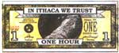

PHOTOGRAPHS BY MARIO RUIZ
Author and associate editor Michele Silver headed to Rhaca's Farmer's Market and ended up exchanging her HOURS for ice cream (top), pottery (middle), and a handcrafted doll (bottom).